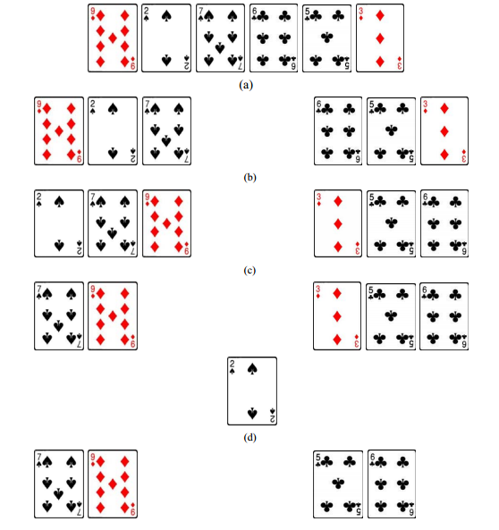
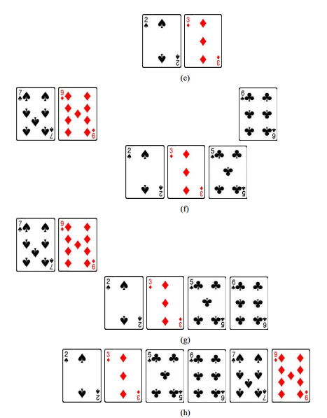

10.3 分治法
分治法（divide-and-conquer）是解决问题的一种常用策略，其思想是将难以处理的较大 问题分解为若干个较小的子问题，然后分别解决这些子问题，并从子问题的解构造出原问题 的解。“分”是指将原问题分解，“治”是指解决问题。
“分治”仅提及了分而治之的过程，而未提及此方法的另一个特点——递归。当我们将 大问题分解成子问题后，经常会发现子问题与大问题本质上是相同的问题，因此可以利用递 归方法来设计算法。所以，分治法常常与递归法结合起来使用。
下面我们通过排序问题来介绍分治法的应用。排序问题是指将一个数据集合中的所有数 据按从小到大的顺序（严格递增或非递减）重新排列①。计算机科学家发明了很多排序算法， 本节主要介绍利用分而治之思想设计的归并排序算法，但为了进行比较，我们先介绍没有什 么“技术含量”的选择排序算法。
选择排序
选择排序是一种朴素的排序方法，普通人都很容易想到。其思想是：先从全体 n 个数据 中找出最小值，并将该最小值排在第一个位置；然后从剩下的 n-1 个数据中再次找出最小值，这个最小值实际上是全体数据的次小值，我们将它排在第二个位置；依此类推，直至从剩下 的 2 个数据中找出最小值，排在第 n-1 个位置，而剩下的最后一个数据（全体数据中的最大 值）可以直接排在第 n 个位置。
① 当然也可以按从大到小的顺序（严格递减或非递增）排列，这在解决方法上并没有什么本质差别。
选择排序方法的关键步骤是找出当前剩余数据中的最小值。我们在 3.6 节中讨论过这个 问题①，并且设计了一个很好的算法：逐个检查每一个数据，并记录当前见到的最小值；当 数据检查完毕，所记录的数据就是全体数据中的最小值。下面我们利用这个求最小值的方法 来实现选择排序算法。
算法的核心部分是一个循环，每一轮循环找出剩余数据中的最小值，并将该值放到合适 位置。假设数据在列表 list 中，则第一次循环找出 list[0:n-1]中的最小值，并将该值存入 list[0] 处（原来的 list[0]数据需要挪地方，见下面介绍的实现技巧）。第二次循环从 list[1:n-1]中找 出最小值，并存入 list[1]处；依此类推，第 n-1 次循环将 list[n-2:n-1]中的最小值存入 list[n-2]， 而剩下的最后一个数据自然只能存入 list[n-1]。至此，list 中存储的数据即为从小到大有序 排列的。
实现此算法时，如果没有额外的存储空间，只使用 list 本身的空间来排序，则在第一次 循环中将最小值放入 list[0]时，原先存储在其中的数据就会被覆盖。为了保留这个数据，一 个简单的技巧是将 list[0]与找到的最小值交换。即，假如最小值是 list[k]，则执行
list[0],list[k] = list[k],list[0]
其他轮次的处理也是一样。为此，在循环中需要用一个变量记录最小值的位置索引。 下面的 Python 代码实现了以上设计思想，其中每轮循环找出 list[i:n-1]中的最小值（用变量 min 记录其索引位置），并放入 list[i]中。
>>> def selSort(list):
n = len(list)
for i in range(n-1):
min = i
for j in range(i+1,n):
if list[j] < list[min]:
min = j
list[i],list[min] = list[min],list[i]
>>> datalist = [5,2,8,3,4]
>>> selSort(datalist)
>>> print datalist
[2, 3, 4, 5, 8]
注意，与 3.6 中最小值算法不同的是，这里找最小值时并非记录最小值本身，而是记录最小 值的索引位置 min，即 list[min]才是当前最小值，这是为了使列表数据交换位置更方便。另 外，循环变量 i 只需从 0 取到 n-2，因为当前 n-1 个数据就位后，最后一个位置自然就是最 大值。
选择排序算法很容易设计实现，并且当数据量不大时效率也还可以，但当数据量很大时 性能很差。采用分治法可以设计一种更好的排序算法，即归并排序。
① 3.6 中讨论的是求最大值，但算法稍加改变即可用于求最小值。
归并排序
人们在玩扑克牌的时候，经常将手上的牌排成特定的顺序，比如按花色或按大小排序。
如果分到的牌不多，玩家一般用一只手将牌呈扇形握持，另一只手去整理排序。然而，如果 玩的是用到两三副牌的游戏，每个玩家分到的牌很多，那么玩家就会有手太小难以排序的烦 恼。这时，如果旁边坐着个观战者，玩家可以请这个观战者帮着拿一些牌，两人分别将手中 不多的牌进行排序，然后再合并两手牌以完成全部牌的排序。这就是归并排序的基本思想， 它将大任务分解成较小任务，解决了较小任务后再合并结果。下面我们详细介绍这种利用分 治法进行排序的方法。
给定一个较大的数据集合 S，先将数据平分为两部分 S1 和 S2，然后分别对 S1 和 S2 进行 排序，从而得到两个“局部有序”的序列。接下去将这两个局部有序序列合并成为“全局有 序”序列，这个过程称为归并（merge）。假设用序列 S3 存储归并结果，则具体归并方法是： 第一轮，两个局部有序的序列 S1 和 S2 分别拿出自己的局部最小值进行比较，其中更小者显 然是全局最小值，因此应放入 S3 的第一个位置。如果全局最小值来自 S1，则 S1 中原来排在 该最小值后面的数据成为新的局部最小值。第二轮，再次比较 S1 和 S2 的局部最小值，其中 更小者实际上是全局第二小的数据，因此应放入 S3 的第二个位置。第三轮以下依此类推， 不断比较 S1 和 S2 的局部最小值，并将更小者放入 S3，直至 S1（或 S2）的所有数据都已放入 S3。最后，只需将 S2（或 S1）的剩余数据按序放入 S3 的尾部，即可得到全局有序序列。图 10.5 用整理扑克牌的例子展示了这个归并排序过程。


图 10.5 归并排序
下面是对图 10.5 所示过程的简要解释：
(a) 无序的初始扑克牌集合，牌太多导致难以一手进行排序；
(b) 一分为二，玩家和帮忙者两人各持一半牌；
(c) 两人分别对手中牌进行排序，从而得到两手局部有序的扑克牌序列；
(d) 两人比较各自手中的局部最小牌（黑桃 2 和方块 3），其中更小的黑桃 2 是全局最小 牌，将它放到存放归并结果的某个地方（比如桌子上）；
(e)(f)(g) 重复(d)的做法，相继将方块 3、梅花 5 和梅花 6 放到归并结果序列中；
(h) 由于第二个序列已经没有牌了，故将第一个序列剩余的牌接在归并结果序列之后。 至此形成了全局有序序列。
通过图 10.5 的形象化演示，相信读者已经理解归并过程。现在还有一个问题：图 10.5(c) 是对图 10.5(b)的两手牌分别进行“排序”后得到的，问题是怎么排序？显然，我们又回到 了初始的“排序”问题，只不过这次的排序问题具有较小的规模：初始问题是对 6 张牌排序，
现在只需两人分别对自己的 3 张牌排序。这让我们想起了“递归”这个设计利器。是的，如果觉得 3 张牌还是太多，那么可以重复上述一分为二、局部排序、全局归并的过程。这个过程可以一直进行到只有 1 张牌的情形，这时根本无需排序，因为 1 张牌自然是局部有序的。 这样就得到了递归的奠基情形，此时无需递归，只需归并。由于满足了每次递归数据规模减 小和有奠基情形这两个条件，上述递归过程是正确的。归并排序算法的伪代码如下，其中划 线部分表现了该算法的递归结构。
算法：对 datalist 执行归并排序 输入：无序的列表 datalist 输出：有序的列表 datalist 将 datalist 一分为二：list1 和 list2 对 list1 执行归并排序 对 list2 执行归并排序 归并 list1 和 list2，结果放入 datalist
下面我们用 Python 编制一个完整的程序来实现并排序算法。程序 10.1 主要由两个函数 构成：函数 merge 用于归并两个局部有序的列表 list1 和 list2，结果放在 mergelist 中；函数 mergeSort 则利用分治法和递归实现对列表 datalist 的排序。
【程序 10.1】mergesort.py
def merge(list1,list2,mergelist):
i,j,k = 0,0,0
n1,n2 = len(list1),len(list2)
while i < n1 and j < n2:
if list1[i]<list2[j]:
mergelist[k] = list1[i]
i = i + 1
else:
mergelist[k] = list2[j]
j = j + 1
k = k + 1
while i < n1:
mergelist[k] = list1[i]
i = i + 1
k = k + 1
while j < n2:
mergelist[k] = list2[j]
j = j + 1
k = k + 1
def mergeSort(datalist):
n = len(datalist)
if n > 1:
m = n / 2
list1,list2 = datalist[:m],datalist[m:]
mergeSort(list1)
mergeSort(list2)
merge(list1,list2,datalist)
data = [9,2,7,6,5,3]
mergeSort(data)
print data
执行程序 10.1，将在屏幕上看到输出：
[2, 3, 5, 6, 7, 9]
顺便提醒读者注意：程序 10.1 中，函数 mergeSort 的形参 datalist 是列表类型，调用时 我们传递列表 data 作为实参。由于函数对列表类型的实参的修改后果是可以带出函数的①， 所以当我们将无序的 data 传给 mergeSort，等 mergeSort 执行完毕，data 就变成有序的了。
前面介绍的二分搜索算法其实也是分治法的应用，只不过将数据平分为两部分之后，只 需“治”其中一部分，另一部分可以忽略。后面的 Hanoi 塔问题也是分治法的应用。
最后小结一下分治法。解决一个问题时，经常将问题分解为较小的问题，小问题和大问 题是同类问题。解决了小问题之后，将部分解合并，形成初始问题的最终解。如果小问题完 全类似于初始问题，只是规模较小，显然可以用递归法设计算法。